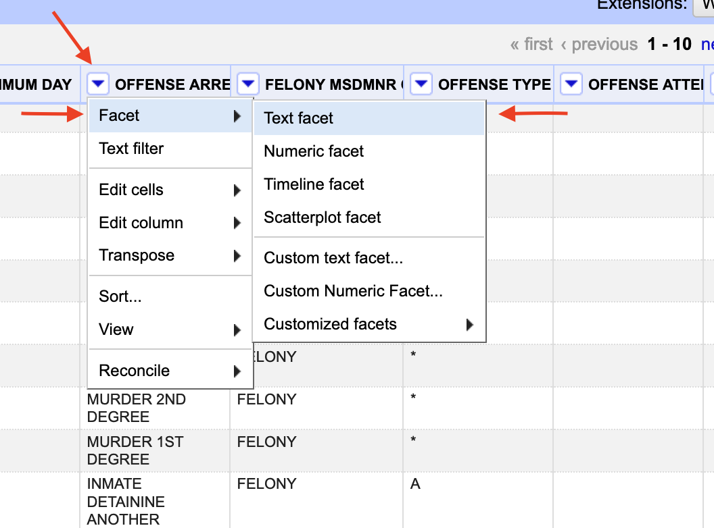

Data Cleaning Part III: OpenRefine
The basics
Gather ’round kids and let me tell you a tale about your author. In college, your author got involved in a project where he mapped crime in the city, looking specifically in the neighborhoods surrounding campus. This was in the mid 1990s. Computers were under powered. Tools were pretty primitive. I was given a database of nearly 50,000 calls for service.
And then I learned that addresses were not stored in a standard way. However the officer wrote it down, that’s how it was recorded.
What did that mean?
It meant the Lincoln Police Department came up with dozens of ways to say a single place. And since the mapping software needed the addressed to be in a specific form, I had to fix them. For example, I will go to my grave knowing that Lincoln High School’s street address is 2229 J Street. Police officers wrote down LHS, L.H.S., Lincoln HS, Lincoln H.S., LHS (J Street), 2229 J, 2229 J ST, St., Street and on and on and on. That one was relatively easy. A local convenience store chain, with 8 locations around the city, was harder. I had to use the patrol district to locate them.
It took me four months to clean up more than 30,000 unique addresses and map them.
Enter OpenRefine.
OpenRefine is a series of tools – algorithms – that find small differences in text and helps you fix them quickly. How OpenRefine finds those small differences is through something called clustering. Clustering is where, through algorithms, it finds small meaningless differences between two rows of data – “Omaha” vs “omaha”, for example – and surmises that they are the same thing.
I tell you this because if I had OpenRefine, it would have taken me a week, not four months. Every time I talk about OpenRefine, I remember this, and I get mad.
We’re going to explore two ways into OpenRefine: Through R, and through OpenRefine itself.
Manually cleaning data with OpenRefine
NOTE: You need to follow these steps for the assignment in Canvas if you haven’t looked there yet.
OpenRefine is free software. You should download and install it. Using a library like Refinr in a notebook is great for quick things on smaller datasets that you can check to make sure it’s not up to any mischief. More on that later. For bigger datasets, OpenRefine is the way to go. And it has a lot more tools than Refinr does (by design, but still).
After you install it, run it. OpenRefine works in the browser, and the app spins up a small web server visible only on your computer to interact with it. A browser will pop up automatically.
You first need data. Let’s use a dataset of charges Nebraska prison inmates are currently serving time for. You can download that here:
For this walkthrough:
Now you have to import your data into a project.
After your data is loaded into the app, you’ll get a screen to look over what the data looks like. On the top right corner, you’ll see a button to create the project.
The real power in OpenRefine is in faceting. In our case, we’re specifically going to use text faceting. Next to the OFFENSE ARREST DESC header, click the down arrow, then facet, then text facet.

After that, a new box will appear on the left. It tells us how many unique offenses are there: 4,127. And, there’s a button on the right of the box that says Cluster. Click that.

The default clustering algorithm used is key collision, using the fingerprint function. The key collision merge function takes each string and extracts the key parts of it. It then puts every key in a bin based on the keys matching. The documentation has descriptions of the functions if you’re curious.
At the top, you’ll see which method was used, and how many clusters that algorithm identified. Then, below that, you can see what those clusters are. Then, using human judgement, you can say if you agree with the cluster. If you do, click the merge checkbox. When it merges, the new result will be what it says in New Cell Value. Most often, that’s the row with the most common result.

Now begins the fun part: You have to look at all 261 clusters found and decide if they are indeed valid. The key collision method is very good, and very conservative. You’ll find that most, if not all of them, are usually valid.
When you’re done, click Merge Selected and Re-Cluster.
If any new clusters come up, evaluate them. Repeat until either no clusters come up or the clusters that do come up are ones you reject.
Now. Try a new method. Rinse and repeat. You’ll keep doing this, and if the dataset is reasonably clean, you’ll find the end.
If it’s not, it’ll go on forever.


A question for all data analysts – if the dataset is bad enough, can it ever be cleaned?
There’s no good answer. You have to find it yourself.
Refinr, OpenRefine in R
Enter refinr, a package that contains the same
clustering algorithms as OpenRefine but all within R. Go ahead and
install it if you haven’t already by opening the console and running
install.packages("refinr"). Then we can load libraries as
we do.
library(tidyverse)
library(janitor)
library(refinr)library(tidyverse)
library(janitor)
library(refinr)Let’s load a simple dataset where I know there’s a simple problem. It’s a dataset of mountain lion sightings from the Nebraska Game and Parks Commission. The data is getting old – it’s not newsworthy anymore – but it illustrates this just fine.
mountainlions <- read_csv("http://mattwaite.github.io/datajournalismfiles/mountainlions.csv")mountainlions <- read_csv("http://mattwaite.github.io/datajournalismfiles/mountainlions.csv")Let’s take a quick look at it.
head(?????????????)The issue in this dataset, if you look carefully, is that there’s two Sheridan counties – a Sheridan and a sheridan. We can spot that with a quick group_by and tally.
mountainlions %>%
group_by(COUNTY) %>%
tally()Exercise 1: Key collisions
The first merging technique we’ll try is the
key_collision_merge. The key collision merge function takes
each string and extracts the key parts of it. It then puts every key in
a bin based on the keys matching. So in this case, it finds sheridan and
Sheridan and recognizes that the keys match, and since Sheridan is more
common, it uses that one.
One rule you should follow: do not overwrite your original fields. Always work on a copy. If you overwrite your original field, how will you know if it did the right thing? How can you compare it to your original data? To follow this, I’m going to mutate a new field called CleanCounty and put the results of key collision merge there.
Then, to show it worked, I’ll do the same group and tally.
mountainlions %>%
mutate(??????????? = ???_?????????_?????(COUNTY)) %>%
group_by(CleanCounty) %>%
tally()And just like that, instead of 35 and 2 in two different Sheridan counties, we have 37 in one Sheridan County.
More complex issues
Behind the scenes, I’ve loaded up the same dataset you used in
OpenRefine of the charges prison inmates are serving time on. I’ve also
used janitor’s clean_names function to give us usable
headers and I put it in a dataframe called crimes.
head(charges)We’re going to tackle the same problem we tried in OpenRefine, but with Refinr. This is both to show you how easy it is, and as a warning. Just because it’s easy, doesn’t mean it’s correct.
As you saw before, there’s more than 4,000 unique charges, and many of the are obvious duplicates. Let’s get a quick row count so we know how we’re doing.
charges %>%
group_by(offense_arrest_desc) %>%
tally() %>%
nrow()Exercise 2: Key collisions 2, electric boogaloo
If you don’t get the reference, take a break from your homework for a minute and watch the greatest dance fight in the history of film.
So how does key_collision_merge do with the
offense_arrest_desc? First we’ll mutate it into a new column, then group
by and tally it up.
charges %>%
mutate(
clean_charges = key_collision_merge(???????_??????_????)
) %>%
group_by(clean_charges) %>%
tally() %>%
nrow()Cuts down the duplicates by 583.
Exercise 3: n grams
But since the charges are often multiple words, we should try using
n_gram_merge, which looks a multiple words.
Here’s an example using sensible defaults for weighting – unfortunately the documentation doesn’t do much to explain what they are.
charges %>%
mutate(
clean_charges = n_gram_merge(
offense_arrest_desc,
weight = c(d = 0.2, i = 0.2, s = 1, t = 1))
) %>%
group_by(?????_???????) %>%
tally() %>%
nrow()Cuts it down by almost 1000.
Exercise 4: soundex
That seems pretty good. Here’s a different method, using a method that turns words into phonetic spellings called soundex.
charges %>%
mutate(
clean_charges = n_gram_merge(
offense_arrest_desc,
method = "???????", useBytes = TRUE
)) %>%
group_by(clean_charges) %>%
tally() %>%
nrow()Cut it down by almost 1400!
BUT.
Are they right?
We have no idea. If you look carefully, you’ll see a lot of success here. But look at rows with numbers. Numbers throw soundex off pretty substantially. In some cases, a charge of theft by taking $0-500 is in the original column. The clean version? Theft by taking $5000. That’s a big difference, and a bad miss.
So can we trust automated data cleaning?
This note from the documentation is exceedingly important:
This package is NOT meant to replace OpenRefine for every use case. For situations in which merging accuracy is the most important consideration, OpenRefine is preferable. Since the merging steps in refinr are automated, there will usually be more false positive merges, versus manually selecting clusters to merge in OpenRefine.
In short, only use Refinr where the use case is simple and the changes of a mistake are low and easy to catch if it happens. In cases where you need to do massive corrections of data, OpenRefine with a human in the loop is the better choice.